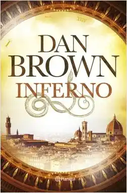
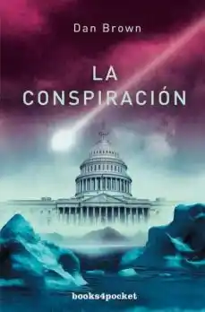

Inferno
Sipnosis
Los lugares más oscuros del infierno están reservados para aquellos que mantienen su neutralidad en épocas de crisis moral.
El profesor de simbología Robert Langdon se despierta en un hospital en mitad de la noche, desorientado y con una herida en la cabeza. No recuerda nada de las últimas treinta y seis horas. Ni cómo ha llegado hasta allí, ni el origen del macabro objeto que los médicos descubren entre sus pertenencias. El mundo de Langdon pronto se convierte en un caos y se ve obligado a huir por las calles de Florencia junto a una inteligente joven, Sienna Brooks, cuyas hábiles maniobras le salvan la vida. Langdon no tarda en darse cuenta de que se encuentra en posesión de una serie de inquietantes códigos creados por un brillante científico; un genio cuya obsesión con el fin del mundo sólo es equiparable a la pasión que siente por una de las obras maestras más influyentes jamás escritas: Inferno, el oscuro poema épico de Dante Alighieri.
En su huida a través de escenarios tan conocidos como el Palazzo Vecchio, los jardines Boboli o el Duomo, Langdon y Brooks descubren una red de pasadizos ocultos y secretos antiguos, así como un nuevo y terrorífico paradigma científico que podría ser utilizado para mejorar la vida en la Tierra... o para destruirla.
Apasionante y controvertida, Inferno es una lectura endiabladamente entretenida; una novela que cautivará al lector con la belleza del arte, la historia y la literatura italianas…, mientras le plantea cuestiones provocativas sobre el papel de la ciencia en nuestro futuro.
Autor: Dan Brown
Si quiere saber más pincha aquí.
La conspiración
Sipnosis
Un enorme engaño amenaza con hundir al mundo en el caos.
Un nuevo satélite de la NASA demuestra la existencia de un extraño objeto enterrado en el hielo del Ártico. Este descubrimiento supone una victoria muy necesaria para la política espacial de Estados Unidos y es clave para la futura elección de su Presidente.
La analista de inteligencia Rachel Sexton y el académico Michael Tolland son los encargados de verificar la autenticidad del hallazgo. Pero en su búsqueda descubren algo impensable: todo ha sido un engaño. Antes de que puedan hablar con el Presidente, Rachel y Michael son atacados por un grupo de asesinos a sueldo. Un misterioso hombre los lidera, y no se detendrá ante nada para ocultar la verdad.
Dan Brown transporta a los lectores desde la Oficina Nacional de Reconocimiento (NRO), en Virginia, hasta las plataformas de hielo del círculo polar ártico y a los pasillos del Ala Oeste de la Casa Blanca en un emocionante thriller que recorre los secretos mejor guardados de los servicios secretos norteamericanos.
Autor: Dan Brown
Si quiere saber más pincha aquí.
La sospecha de Sofía
Sipnosis
En una Europa dividida por un muro insalvable, dos hombres y una mujer buscan desesperadamente su destino.
Washington. El experto en simbología Robert Langdon es convocado inesperadamente por Peter Solomon, masón, filántropo y su antiguo mentor, para dar una conferencia en el Capitolio. Pero el secuestro de Peter y el hallazgo de una mano tatuada con cinco enigmáticos símbolos cambian drásticamente el curso de los acontecimientos. Atrapado entre las exigencias de una mente perturbada y la investigación oficial, Langdon se ve inmerso en un mundo clandestino de secretos masónicos, historia oculta y escenarios nunca antes vistos, que parecen arrastrarlo hacia una sencilla pero inconcebible verdad.
Con la ayuda de Katherine Solomon, hermana de Peter y experta en ciencias neoéticas, Robert Langdon tiene doce horas para salvar a su amigo y, al mismo tiempo, evitar que uno de los secretos mejor guardados de nuestra historia caiga en manos equivocadas...
Dan Brown vuelve a retar a los lectores con una historia inteligente y de ritmo vertiginoso que ofrece sorpresas en cada página. El símbolo perdido es lo que los fans del autor estaban esperando: su novela más emocionante.
Paloma Sánchez-Garnica
Si quiere saber más pincha aquí.